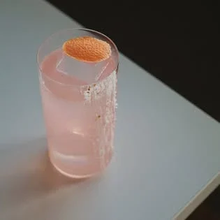
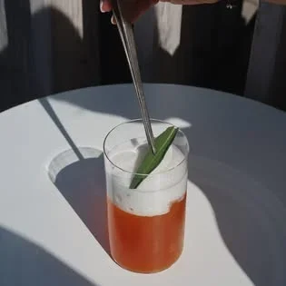

Kaviareň a bar · Janka Jesenského 16, Topoľčany
CaféBarSway
Sway je miesto, kde si v príjemnom prostredí vyberiete z bohatej ponuky káv, miešaných drinkov, prípadne iných alkoholických a nealkoholických nápojov.
Online rezervácia — vyberiete si deň a čas, potvrdenie príde e-mailom.
- 4,6 ★Google · 395 recenzií
- 94 %odporúča na Facebooku · 95 hodnotení
- RaňajkyPo–Pi 8:00–12:00 · So 9:00–12:00 (podľa Instagramu)
- 1,2 tis.sledovateľov na Instagrame @sway_cafebar
Ponuka
Dve polovice dňa
Ráno
Káva a raňajky
Ráno začína kávou z bohatej ponuky káv
— a do obeda aj raňajkami.
Raňajky Po–Pi 8:00–12:00 · So 9:00–12:00
- Káva —,— €
- Raňajky —,— €
Názvy a ceny z lístka zatiaľ nemáme. Doplníme ich podľa vašej ponuky — ráno na jednej miske váh, večer na druhej.
Večer
Miešané drinky
Večer si vyberiete z miešaných drinkov, prípadne iných alkoholických a nealkoholických nápojov
.
- Miešané drinky —,— €
- Alkoholické a nealkoholické nápoje —,— €
Drinkovú kartu s cenami doplníme podľa vašej ponuky.
Rezervovať stôl na večer
Priestor
Príjemné posedenie nájdete práve u nás.
Dlhý drevený bar s podsvieteným pultom, vysoké stoličky z masívu a nápis Sway na tmavej stene — kaviareň cez deň, bar večer.
Na stole
Fotky z Facebooku kaviarne — od svetlého rána po večerné tiene.


Otváracie hodiny
Kedy je otvorené overiť
Google a Instagram uvádzajú rôzne časy zatvárania. Kým ich podnik nepotvrdí, pred večernou návštevou radšej zavolajte.
| Deň | Graf | ||
|---|---|---|---|
| Po–Št | 8:00–19:00 | 8:00–20:00 | |
| Pi | 8:00–23:00 | 8:00–22:00 | |
| So | 9:00–23:00 | 9:00–22:00 | |
| Ne | 9:00–19:00 | 9:00–20:00 | |
812162024 |
Raňajky Po–Pi 8:00–12:00 · So 9:00–12:00 — podľa Instagramu
Kontakt
Na kávu aj na drink
Adresa
Janka Jesenského 2183/16955 01 Topoľčany Otvoriť v Google Maps Facebook Instagram @sway_cafebar